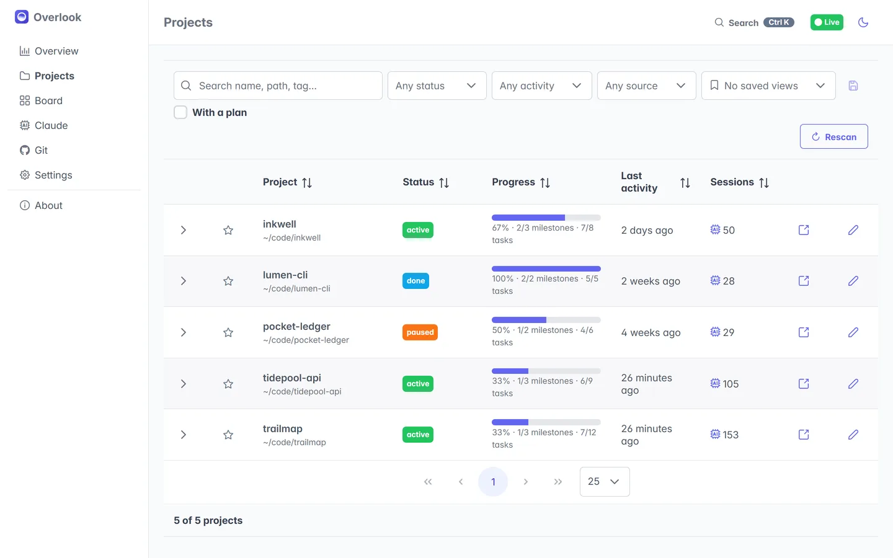

Found for you
Point it at your code. It finds the projects.
Pick the folders that hold your work. Every repo, CLAUDE.md or plan file becomes a project, merged with every folder you have used Claude Code in. Nothing to set up per project.
- Status from real activity: active, paused after two quiet weeks, done when every milestone is reached
- Live: new folders and edits show up as they happen

Plans become progress
Drag a card. Your plan file changes.
Overlook reads the Markdown plans you already keep, ## milestones and - [ ] tasks, and turns them into progress bars, burnup charts and a board. Move a card and the checkbox in the file is ticked. The file stays the source of truth.
- A backup, a conflict check and Undo on every write
- Works with
PLAN.md,ROADMAP.md,TODO.mdor names you choose

Claude Code usage
See where your tokens go.
Sessions, prompts, tokens and estimated cost per day, model and project, read from Claude Code’s own session logs on your computer.
- Filter by project, model and date range
- Costs are estimates at API list prices, not your subscription bill

Git at a glance
Every repo’s loose ends, in one list.
Uncommitted files, unpushed commits and a 90-day commit heatmap across all your repos.
- Read-only: Overlook never takes git’s lock or changes your repos
- No git installed? Projects and plans still work

Keyboard first
One shortcut to everything.
Jump to any page or project, open a project in VS Code or start Claude Code in it, from one search box. Try it on this page.
Local only
Nothing leaves your machine.
No account, no telemetry, no cloud. Overlook reads your files where they are. The only network call it can make is the update check, and you can switch that off.
- Listens on 127.0.0.1 only, with a per-launch token
- Open source (MIT): read every line on GitHub
Settings → Network activity
Update check: overlook-downloads.kennyrafael-cg.workers.dev, at start-up and once a day. You can turn it off.
Nothing else. Your code, plans, prompts and usage are never sent.
Download
Free and open source (MIT). Windows 10 and 11, macOS 12 and later.
Install on Windows
Overlook is not code-signed yet, so Windows SmartScreen warns about it the first time:
- Download and run
Overlook-Setup-…-x64.exe(or-arm64.exeon Arm devices). - If you see “Windows protected your PC”, click More info, then Run anyway.
- Pick where to install. Overlook opens and asks for the folders that hold your projects.
Updates install themselves: Overlook checks for a new release at start-up and once a day and asks before restarting.
Install on macOS
Overlook is not notarized by Apple yet, so macOS blocks the first launch until you allow it:
- Download the
.dmgfor your Mac (Apple menu → About This Mac shows “Apple M…” or “Intel”). - Open it and drag Overlook to Applications.
- Open Overlook from Applications. When macOS says it cannot verify the app, click Done.
- Open System Settings → Privacy & Security, scroll down to the message about Overlook and click Open Anyway, then confirm with your password.
- The first time you use Start Claude Code, macOS asks whether Overlook may control Terminal (or iTerm). Click Allow.
Overlook tells you when a new version is out; download it and drag it to Applications again to replace the old one. Your settings are kept.
FAQ
Does it send my code or plans anywhere?
No. Everything is read and stored on your computer. The only outbound request is the update check to overlook-downloads.kennyrafael-cg.workers.dev, listed in Settings → Network activity, and you can switch it off.
Do I need Claude Code?
No, but it is built for it. Without Claude Code you still get projects, plans, the board and git activity; the usage pages stay empty. Claude Code installed inside WSL is detected too.
What does a plan file look like?
Any Markdown file named like PLAN.md or ROADMAP.md: ## Milestone headings with - [ ] / - [x] checkboxes, and [~] for in progress. You can change the file names in Settings.
Why does macOS or Windows warn about the app?
Signing certificates cost money every year, and Overlook is free. The installers are built and tested by an automated release process; the warning goes away once the app is signed, which is planned if there is enough interest.
Linux or iOS?
Not planned for now. Linux users can run it from source (npm install && npm start, then open it in a browser). iOS cannot read your local files, so a phone app would not be useful.
Is it really free?
Yes, MIT licensed. If there is demand, paid extras may come later; the current features stay free.